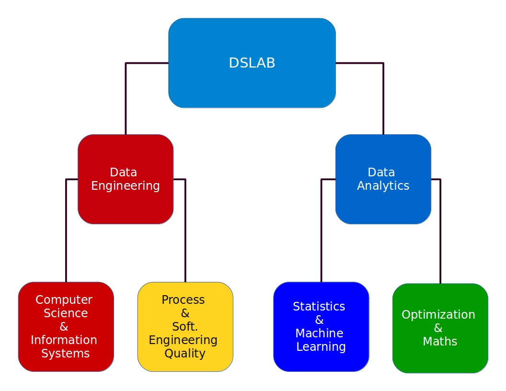

<!-- main-container start -->
<!-- ================ -->
<style>
img {
    display: block;
    margin-left: auto;
    margin-right: auto;
}
</style>

<section class="main-container ">
	<div class="container">
		<div class="row">

			<!-- main start -->
			<!-- ================ -->
			<div class="main col-md-12">
				<div class="row">
					<div class="col-md-8 pl-30">
						<h1 class="title">Research lines</h1>

					</div>

					<!--
					<div class="col-md-4">
						<div class="col-side-pad">
							YOU HAVE A SIDE AREA HERE TO ADJUST ADDITIONAL CONTENT
						</div>
					</div>
					-->
				</div>
				<p>
					The subject of study of the research group on Fundamentals and Applications of Data Science (DSLAB)
is the Science of Data, its foundations and its applications.
Data Science is a combination of Mathematics and Statistics, Engineering, Information Technology and domain knowledge.
The main objective of the DSLAB is to study and develop the necessary tools, knowledge and skills to guarantee
the correct development of a Data Science project. It is intended, on the one hand, to study and develop new statistical techniques and
of machine learning to perform Data Science. In addition, the analytical applications necessary to improve the daily practices of
experts from different application domains are designed and evaluated.				</p>
 

				<p>In the area of ​​Data Engineering, storage, representation, transformation,
					computation and parallelization are studied for large volumes of data.
					It is responsible for the development, construction, testing and maintenance of
					Big Data architectures and technologies.
					Once continuous pipelines are available to and from the information,
					data analysts can carry out their analyzes.
					Within this area we consider two subareas: Computer Science & Information Systems and Process & Software Engineering Quality.</p>

				<h3 style="color:Crimson;">Computer Science & Information Systems</h3>

				<ul>
  				<li>Data adquisition</li>
  				<li>Data storage</li>
  				<li>Data cleaning</li>
					<li>Data preparation</li>
					<li>Computation and parallelization</li>
				</ul>

				<h3 style="color:Goldenrod;">Process & Soft. Engineering Quality</h3>

				<ul>
					<li>Technologies and computing resources</li>
					<li>Software Engineering</li>
					<li>Data management</li>
				</ul>

				<p>In the area of ​Data Analytics,
					models, classification, prediction,
					and visualization associated
					with the data are studied.
					It is the area in charge of the design and elaboration of
					algorithms and mathematical and statistical models to
					 extract valuable information from the data.
					 Within this area we consider two subareas: Statistics & Machine Learning and Optimization & Maths.</p>

				<h3 style="color:DarkBlue;">Statistics & Machine Learning</h3>
				<ul>
					<li>Pattern recognition</li>
					<li>Machine Learning algorithms</li>
					<ul>
						<li>Supervised</li>
						<li>Unsupervised</li>
						<li>Semi-supervised</li>
					</ul>
				</ul>

				<h3 style="color:SeaGreen;">Optimization & Maths.</h3>

				<ul>
					<li>To study and provide the Data Analysis area with the most suitable optimization algorithms in each case of study.</li>
				</ul>


			</div>
			<!-- main end -->

		</div>
	</div>
</section>
